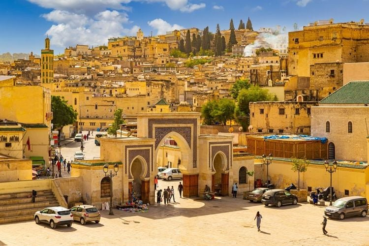
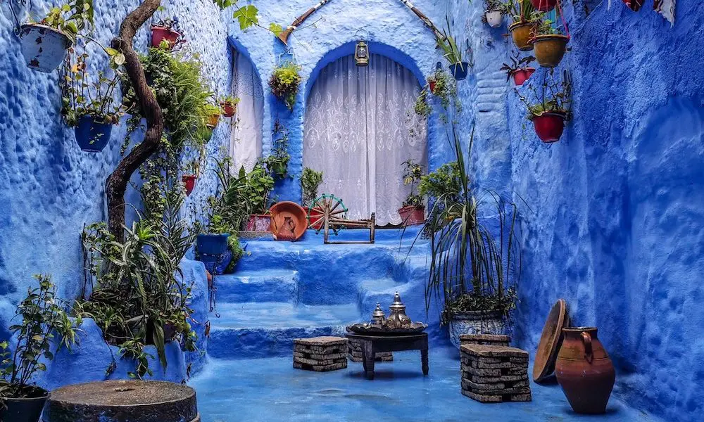

!doctype html>
Triply : Explorez. Rêvez. Voyagez
Nos conseils pour un bon séjour !
Japon, Espagne, Maroc
Villes du Maroc
Fès

Fès est l’ancienne capital du Maroc. Cette ville est gorgée d’histoire et de paysages à ne pas
louper. Je vous ai séléctionné les meilleurs endroits à visiter à Fès :
La Medina dl Fès, un labyrinthe de ruelles et de souks avec son architecture ancienne. Vous
pourrez tester vos méthodes de négociations, mais aussi déguster de bonnes choses.
Médersa Bou Inania, une école coranique remarquable qui met en avant l’architecture
marocaine. Celle-ci est ouverte aussi aux non musulmans, ce qui peut vous permettre d’en appr-
rendre d’avantage sur la culture musulmane et marocaine.
Tannerie Chouara, LE lieu emblématique de Fès. Vous pourrez voir des travailleurs exercer un
anciens métiers encore exploité aujourd’hui. Vous observerez un spectacle visuel coloré mais aussi comprendre une tradition artisanale.
Chefchaouen

Chefchaouen, aussi connu sous le nom de la ville bleu est un incotournable d’un voyage au
maroc. Elle se situe dans les montagnes du Rif, ce qui rend cette ville encore plus extraordinaire,
surtout de nuit ! Il y a deux lieux que vous ne devez pas rater durant votre séjour :
La Médina bleue, le cœur historique de la ville, avec son mood unique. Vous pourrez y découvrir
encore plus de la culture marocaine là base, notamment des Rifiens, une tribu Amazigh.
Chefchaouen est entourée par les montagnes du Rif ce qui est un énorme point positif pour les
amoureux des randonnées. Vous y trouverez des spots avec des lacs, ou même des vues extra-
ordinaires au sommet.
Casablanca

Casablanca est la ville économique du Maroc. Cette ville est connu pour ses quartiers d’affaires,
la dar bida, mais aussi ses plages et sa mosquée iconique.
J’ai 3 lieux à vous conseiller à aller checker si vous passez par Casablanca :
Casablanca Finance City, LE quartier d’affaire de Casablanca. Après avoir vu dess villes traditionnels,
on retrouve un spot rempli de gratte-ciel et de modernité.
La mosquée Hassan II, la deuxième mosquée la plus grande d’Afrique. Ce lieu de culte peut être
visiter par tous le monde (en ayant une tenue ample et en étant respectueux bien évidemment).
La mosquée est impressionante que ce soit de l’extérieur mais aussi de l’intérieur avec une archi-
tecture mauresque et son zelige magnifique !
La plage Ain Diab qui vous fera profiter de l’eau et des vagues. Mais vous pouvez aussi venir
en début de soirée pour profiter de la vie nocture de ce lieu.
Triply